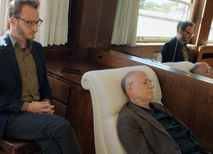

Streetscapes [Dialogue]

Heinz EmigholzDE 2017 – 132 min – English
B: Heinz Emigholz, Zohar Rubinstein
DOP+E: Heinz Emigholz, Till Beckmann
S: Rafael Álvarez, Rainer Gerlach, Markus Ruff – P+D: Filmgalerie 451
With Jonathan Perel, John Erdman, Natja Brunckhorst
There are streets, paths, motorways, alleys, boulevards and promenades. And there are life paths, intersections and dead ends. Two men sit on the shady raised platform of a brick building somewhere in Montevideo. They are submerged in a conversational marathon that never ceases throughout the entire film. The younger of the two is an analyst; the older man his analysand. Their nationalities are unclear; they speak a simple, internationally understandable English. They talk about a childhood among the ruins and the traumatised people of Germany shortly after the Second World War, about fleeing, about an obsessive interest in architecture and about manic writing. And they speak about work with the film camera, which is a technical instrument for the young analyst, but a lifeline for the old film director. The starting point of the six-day marathon is the psychological and physical block that prevents the director from starting a last great film, the Streetscapes saga. The conversation, which in a slow process dissolves the director’s block, takes place in changing places in extreme architectures. The camera, which portrays them both and sets them in relation to the architecture, becomes a third partner. The camera repeatedly disengages from where they are and explores the surrounding streets and neighbourhoods before returning to the two protagonists. The shell constructions of the Uruguayan builder Eliado Dieste where they sojourn resemble gigantic braincases and thus provide a framework for the site and the theme of the project that emerges in the course of their talk: trauma and architecture.
saturday 7 okt 6.30 p.m. filmmuseum münchen
Heinz Emigholz * in 1948 near Bremen in Germany, Heinz Emigholz trained first as a draftsman before studying philosophy and literature in Hamburg. He began filmmaking in 1968 and has worked since 1973 as a filmmaker, artist, writer and producer in Germany and the USA. In 1974 he started his encyclopaedic drawing series The Basis of Make-Up . He looks back on numerous exhibitions, retrospectives, lectures and publications. In 1984 he started his film series Photography and beyond. He has held a professorship in Experimental Filmmaking at the Universität der Künste Berlin from 1993 to 2013, and co-founded the Institute for Time-based Media and the program Art and Media, there. Since 2012 member of the Academy of Arts in Berlin.
Work
Photographie und jenseits 1974-2015 – The Basis of Make-Up I–III
1974-2004 – Miscellanea I–VII 1988–2016 – Architektur als Auto-
biographie 1993–2013
Films of the 2000s Goff in der
Wüste 2003 – D’Annunzios Höhle 2005 – Loos ornamental 2008 –
Parabeton 2012 (7. UX) – The Airstrip 2014 – Le Corbusier 2015